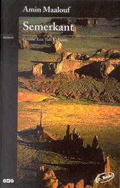

GAZİ DENİZ
Hakkımda
Doğa yürüyüşü ve spor yapmayı severim.Ayrıca yüzmek de yeni hobilerimden biri olmuştur.
Boş zamanlarımda vakit geçirmek için duruma göre kitap okumak,oyun oynamak veya film izlemek seçeneklerim arasındadır.
Sevdiğim Filmler
-
Inception
-
Interstellar
- Hayao Miyazaki Filmleri
- Spirited Away
- Howl's Moving Castle
- Princess Mononoke
- Ponyo
- Lord Of The Rings
- The Fellowship of The Ring
- The Two Towers
- The Return of The King
Sevdiğim Diziler
Sevdiğim Kitaplar
